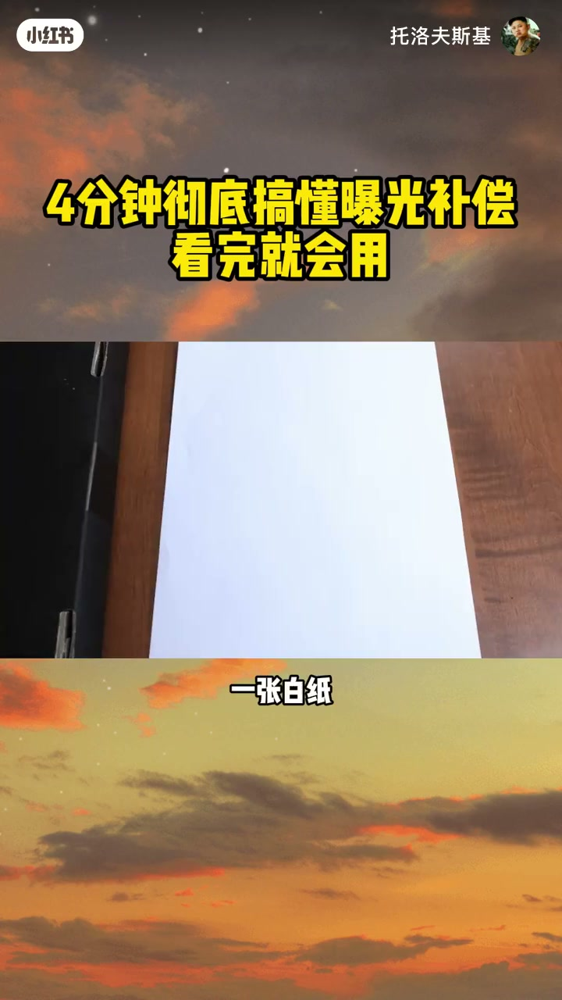
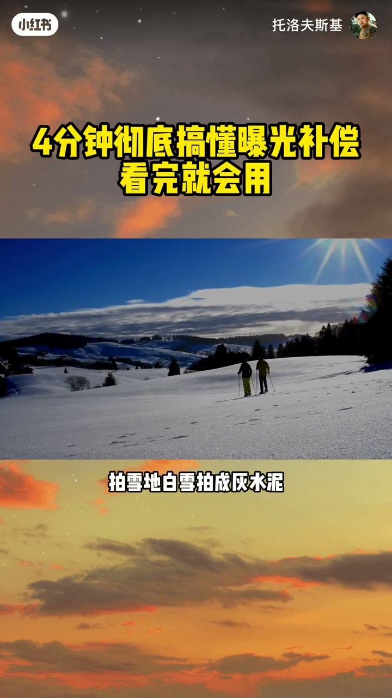
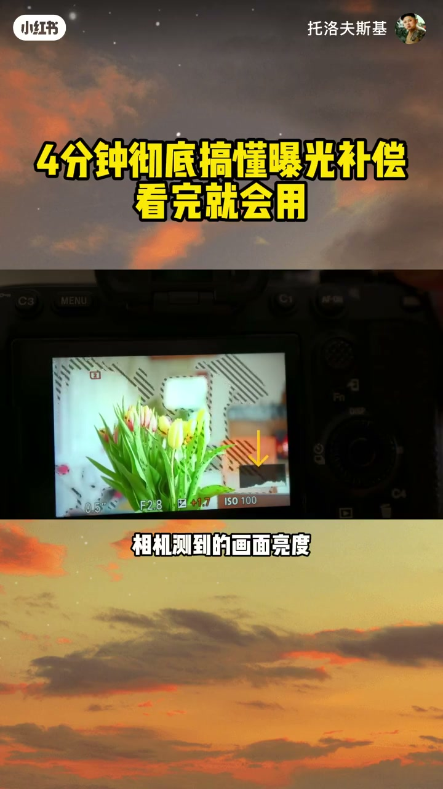
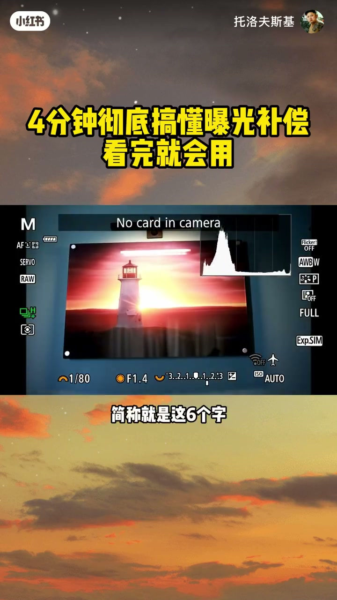
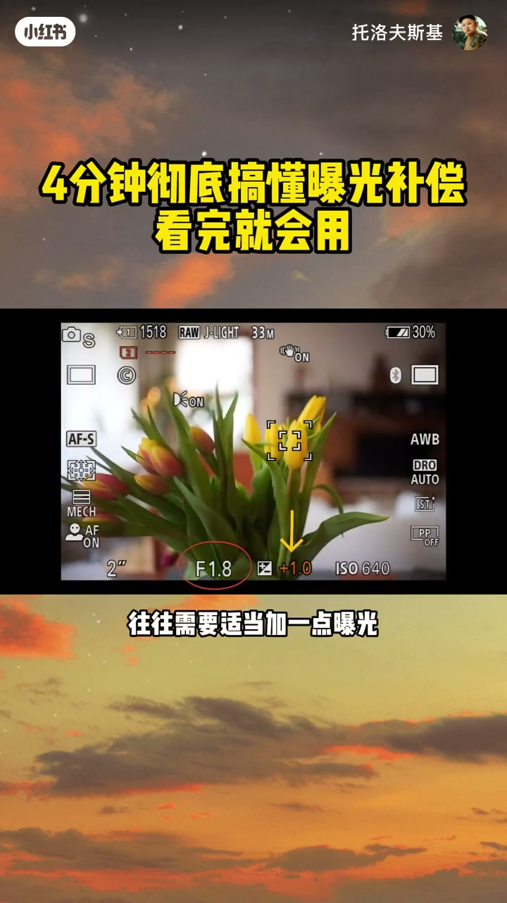
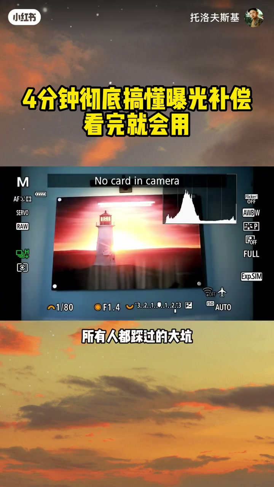
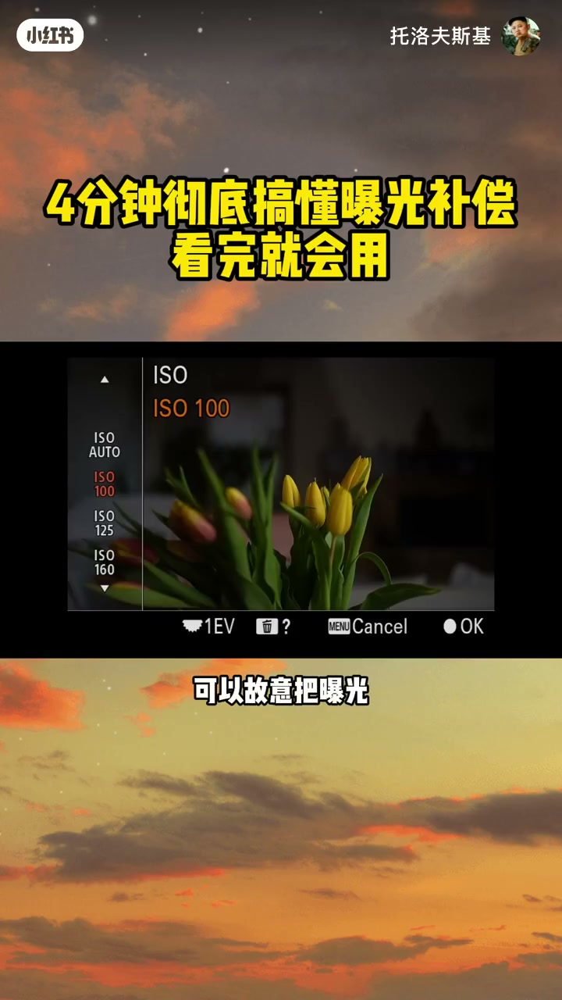
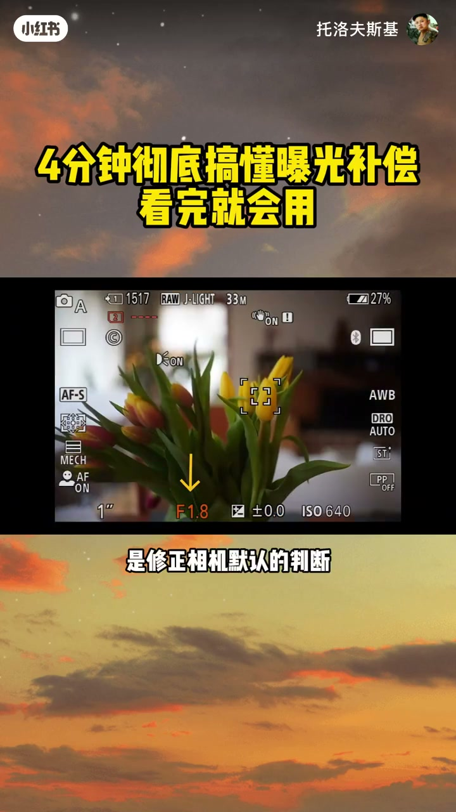

内容要点
「摄影的底层逻辑：4分钟彻底搞懂曝光补偿」教程要点：为什么你眼里的白雪,一进相机就变成了灰雪? → 为什么月亮明明有纹理,相机偏要拍成一个白灯泡? → 相机不是不会拍,它是故意这么拍的 → 因为它有一套自己的曝光标准；详见正文。
知识结构
为什么你眼里的白雪,一进相机就变成了灰雪?
这里给大家一句六字口诀
下次开拍忘了改
- 为什么你眼里的白雪,一进相机就变成了灰雪?
- 为什么月亮明明有纹理,相机偏要拍成一个白灯泡?
- 相机不是不会拍,它是故意这么拍的
- 因为它有一套自己的曝光标准
- 今天几分钟,我让你彻底看懂曝光补偿
为什么你眼里的白雪,一进相机就变成了灰雪?
00:00–01:47为什么你眼里的白雪,一进相机就变成了灰雪?
为什么你眼里的白雪,一进相机就变成了灰雪?；为什么月亮明明有纹理,相机偏要拍成一个白灯泡?；相机不是不会拍,它是故意这么拍的；因为它有一套自己的曝光标准；今天几分钟,我让你彻底看懂曝光补偿；先给大家看一个最直观的测试；一张白纸,一张黑纸；用相机自动模式拍出来,两张居然全是灰色的；如果相机真知道白纸就是白,黑纸就是黑；他们怎么可能拍成一个颜色?；道理很简单；相机只会把所有东西往一个中间亮度拉；它就像个特别死板的人；不管画面里是雪还是没球；都非要拧成不亮不暗的中间色才算完；相机没有拍错,它只是按自己的标准拍；可惜那个标准很多时候不是你的标准；所以我们拍照才会频繁翻车；亮背景的时候,相机觉得太亮,主动压暗；拍雪地,白雪拍成灰水泥；拍逆光自拍,人脸直接黑成剪影；拍亮天空下的花儿连颜色都乏闷；暗背景的时候,相机又觉得太暗,主动提亮；夜里拍月亮,亮成大白饼,纹理全丢；暗环境拍白露,羽毛过曝糊成一片；暗光下拍鹦鹉,毛发细节直接没了；到这我问大家一个问题；为什么雪会被相机拍成灰色?；知道答案的答1,还没搞懂的答2；解决方法就是相机自带的曝光补偿；先给大家说透本质；曝光补偿并不会改变相机测到的画面亮度；它改变的是相机最终采用的曝光目标；简单说就是告诉相机；这一次别按中间亮度的标准拍；相机测不准的地方；你手动掰回你想要的效果；操作很简单；相机上找带加减号的标识；按钮、拨轮、屏幕、菜单里都能调；往正方向拨加曝光,画面变亮；往负方向拨减曝光,画面变暗


01:47–03:13这里给大家一句六字口诀
这里给大家一句六字口诀；先记死、量加、按减、看图；这里的图指的就是直方图；量背景就加曝光,暗背景就减曝光；拿不准就看直方图；简称就是这六个字；不同相机调法不一样；给大家最实用的方案；单反用户先拍一张样片；看屏幕或者直方图判断；太暗就加,太亮就减；直方图通常比直接看屏幕更可靠；微单用户更省事；电子取景器能实时看到最终效果；把曝光补偿设到快捷波轮；眼睛不离开取景器就能盲跳；拍动态主体特别好用；拍的多了不用试拍；直接预判数值；拍雪地亮天空下的深色主体；直接加一档甚至更多；如果希望黑色主体保留更多层次；往往需要适当加一点曝光；避免拍出来发闷发灰；暗背景下拍白色主体；比如月亮、白露；通常需要减曝光保住亮部细节；给大家看个实拍对比；浅色的鸟站在暗背景前；相机自动提亮后羽毛直接过曝发白；把曝光补偿往负方向拨几格再拍；羽毛纹理清清楚楚；这才是我们要的效果；练多了就是肌肉记忆；我现在拍黑鸟自动加四格；拍雪霄自动减三格；亮天空拍飞鸟直接加五格；不用想抬手就调；这里提醒一个所有人都踩过的大坑；每次换新场景拍摄前；一定要把曝光补偿归零；很多人上一场调了正负补偿


03:12–04:30下次开拍忘了改
下次开拍忘了改；前几十张照片全废；白白浪费机会；最后教大家一个保护高光的实用技巧；现在的数码相机暗部适度欠曝的细节；后期通常更容易恢复；但亮部过曝变成纯白的地方；是永远找不回来的；RAW格式能旧一点；但RAW也不是万能；真过曝成纯白谁都救不回来；所以尤其是在对底度很大的强光场景；尤其是用小尺寸传感器的相机；可以故意把曝光调低1-2%；相当于给高光上一层保险；后期再拉暗部就行；我自己用小底相机拍户外；大晴天基本都这么用；说到这补充个小知识点；摄影里通常会用18%中性灰；来帮助理解相机默认参考的这种中间亮度；大多数相机的侧光系统；都围绕这种参考亮度来设计；想要用的更精；后面还可以搭配测光模式一起学；控制相机优先测画面哪个区域；效果会更好；如果今天你只能记住一句话；那就是曝光补偿；不是修照片；是修正相机默认的判断；说到底就是让相机拍成你真正想要的样子；最后两个小互动；第一；大家把口诀打在评论区；量加按减看图；第二考大家一道题；拍雪地你会怎么调；A加曝光；B减曝光




口述/画面要点（40段）
结合 Whisper medium 与画面大字整理；专有名词已校对。
为什么你眼里的白雪,一进相机就变成了灰雪?
为什么月亮明明有纹理,相机偏要拍成一个白灯泡?
相机不是不会拍,它是故意这么拍的
因为它有一套自己的曝光标准
今天几分钟,我让你彻底看懂曝光补偿
先给大家看一个最直观的测试
一张白纸,一张黑纸
用相机自动模式拍出来,两张居然全是灰色的
如果相机真知道白纸就是白,黑纸就是黑
他们怎么可能拍成一个颜色?
道理很简单
相机只会把所有东西往一个中间亮度拉
它就像个特别死板的人
不管画面里是雪还是没球
都非要拧成不亮不暗的中间色才算完
相机没有拍错,它只是按自己的标准拍
可惜那个标准很多时候不是你的标准
所以我们拍照才会频繁翻车
亮背景的时候,相机觉得太亮,主动压暗
拍雪地,白雪拍成灰水泥
拍逆光自拍,人脸直接黑成剪影
拍亮天空下的花儿连颜色都乏闷
暗背景的时候,相机又觉得太暗,主动提亮
夜里拍月亮,亮成大白饼,纹理全丢
暗环境拍白露,羽毛过曝糊成一片
暗光下拍鹦鹉,毛发细节直接没了
到这我问大家一个问题
为什么雪会被相机拍成灰色?
知道答案的答1,还没搞懂的答2
解决方法就是相机自带的曝光补偿
先给大家说透本质
曝光补偿并不会改变相机测到的画面亮度
它改变的是相机最终采用的曝光目标
简单说就是告诉相机
这一次别按中间亮度的标准拍
相机测不准的地方
你手动掰回你想要的效果
操作很简单
相机上找带加减号的标识
按钮、拨轮、屏幕、菜单里都能调